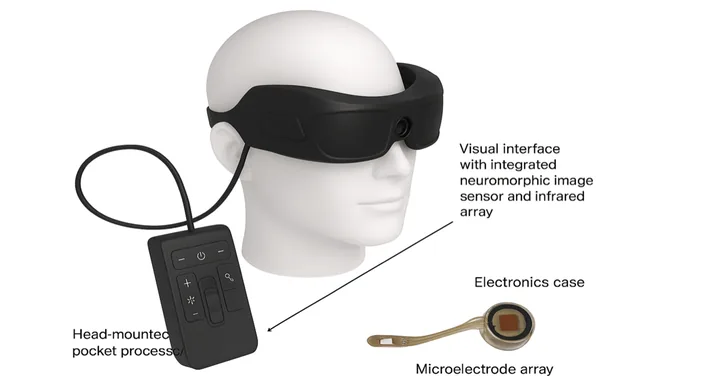

Blind Assistance System
An assistive computer-vision project that helps visually impaired users sense their surroundings: object detection, distance sensing and voice alerts, built with Python, OpenCV and Raspberry Pi.

The idea
Navigation is one of the hardest daily problems for visually impaired people, and technology often addresses it with expensive, closed devices. This project asks a humbler question: can a cheap camera, an ultrasonic sensor and a Raspberry Pi turn obstacles into useful spoken information?
How it works
- Vision: OpenCV processes the camera feed to detect objects and obstacles in the user's path
- Distance: an ultrasonic sensor measures how far the nearest obstacle actually is
- Alerts: the system speaks warnings that combine what the obstacle is and how close it is
Honest scope
This is a practical experiment, not a medical device or a complete navigation solution — and I describe it that way deliberately. What it demonstrates is real: timely, understandable voice feedback built from low-cost hardware. The engineering details are in the write-up, How I Built My Blind Assistance System.
Links
Read the source on GitHub. For similar computer-vision and Python work, see my Python development service, or browse all projects.